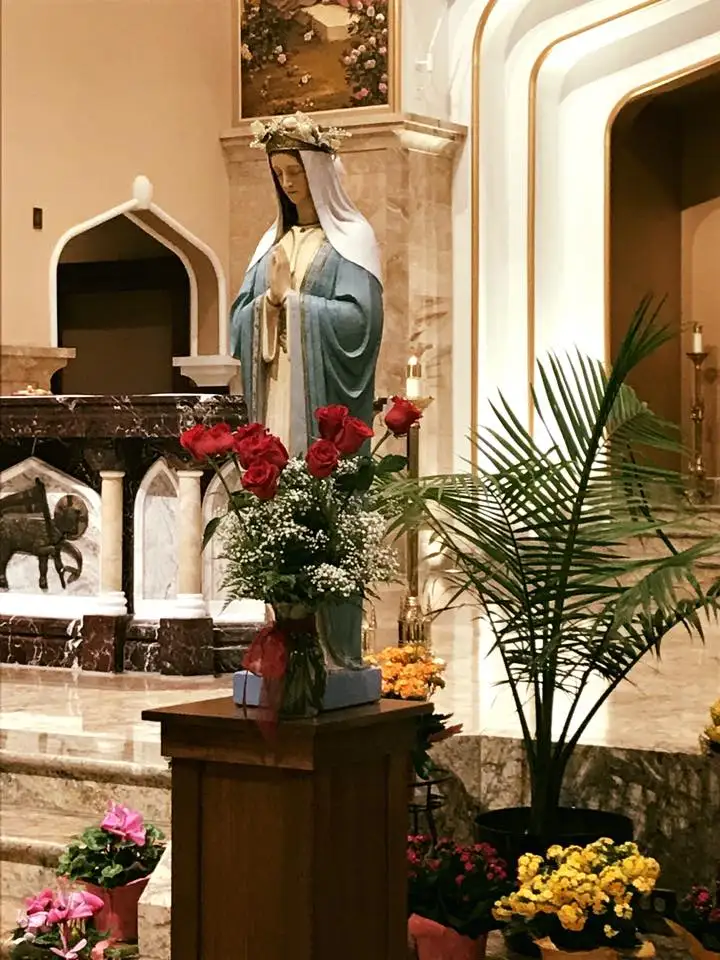
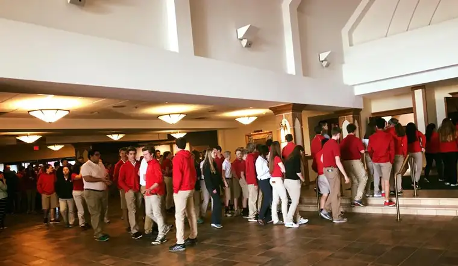
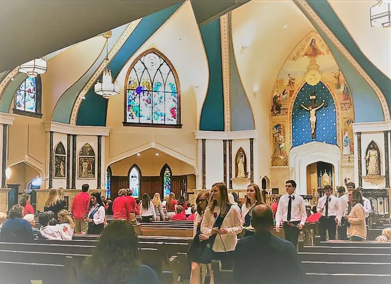
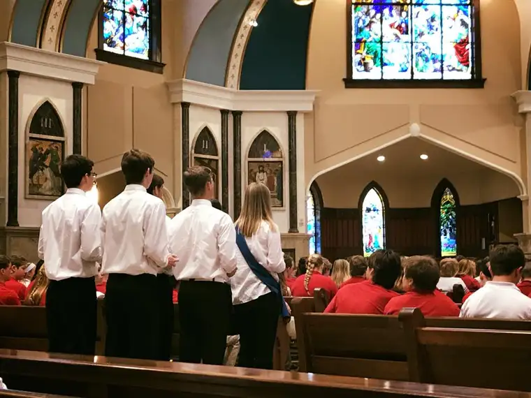
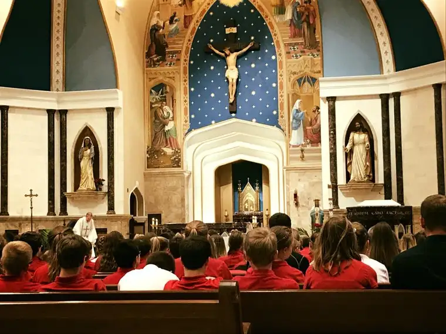

It is among my favorite Masses of the year — the annual May Crowning. And as in the past, our school invited parents and others to take part in this beautiful celebration earlier this week.

As I approached the church, a sea of red uniform shirts were blazing a long trail from the school to where the Mass would take place, at our parish a few blocks away. Then this met me at the door. More red!

Inside, the coronation court had their red roses ready to be placed at Mary’s feet. Being part of the court is quite an honor, and the kids always look very sharp and respectful.

Just a while before I’d left for Mass, in fact, a mother of one of the young men involved had sent me a message through Twitter, asking if I wouldn’t mind taking a few photos of the Mass, since she would be working and couldn’t attend. She’d seen me post things like this before, she said, and had hoped I’d be willing this time as well.
I’d hoped to capture an image of Mary with her roses, but now, this mother’s heart was on my mind, and in my intentions, too. I was happy to try to bring a bit of her son’s honor to her in her absence.
I didn’t find out until later she’d been able to leave to see it after all — God is good! But not knowing this beforehand, I discreetly did my best to capture a few images of her son — or at least his back.

They were impressive, as were the red shirts lined up against the pew in front of me. Quietly, I took a few photos I hoped to share with others later to give them an idea of what the May Crowning is all about at our Catholic schools. I realize only a small portion of parents can get away to see it for themselves.

Later, I shared on Facebook some words from Father’s homily, as well as the pictures I’d taken, and a very short video of the end of the very simple but beautiful Agnus Dei. The post garnered a nice response, based on “likes,” but one who commented challenged me regarding the appropriateness of taking photos during Mass.
I took her words seriously, because like her, I believe Mass should be a time of prayerful contemplation. The Catholic Mass is a time of reverence and beauty. But as a communicator, I also have a natural propensity for wanting to bring the beauty, truth and goodness of our faith to others. And I have felt encouraged in this in the past.
Popes have been speaking for years now, on World Communications days, about the confluence of the New Media and New Evangelization. The two are, they’ve all concluded in one way or another, a fitting pair.
In 2016, Pope Francis noted here, “It is not technology which determines whether or not communication is authentic, but rather the human heart and our capacity to use wisely the means at our disposal.”
And in 2017, Pope Benedict XVI said here, “When people exchange information, they are already sharing themselves, their view of the world, their hopes, their ideals.”
Reading these papal pronouncements on communications through the years has no doubt influenced me, and helped me understand the balance between entering into the sacraments without intrusion, but also, respectfully attempting to communicate the beauty of our faith through modern technology.
I know quite a few fellow Catholic communicators who, like me, often take notes at Mass, desiring to share the nuggets of an inspiring homily, and when appropriate — and when done discreetly — have taken photos during Mass. I’ve also worked in more than one capacity in which I’ve been paid to do so. And on occasion, because of what I’ve captured and shared, I’ve been asked by our Catholic schools for use of pictures I’ve posted, or a blog post I’ve written — things that highlight the community in a good way. In that sense, I’m an unofficial ambassador of sorts. Not everyone needs to be, but for me, it’s a natural part of who I am.
Of course, the goal is to be unobtrusive, to try to sit in a place that will maximize the chances of this, and to be respectful to others. I tried doing all those things at this week’s special Mass, and was so glad to have come away with a few treasures to share with others.
This piece, “Laity called to be on the front lines of using media in new evangelization,” may offer insight on my decision to take photos at our school’s May Crowning. I also appreciated this discussion on the Catholic Answers forum on the topic of “taking pictures during Mass.”
One woman noted how she’d seen Archbishop Aquila installed in the Denver Archdiocese. I beamed to read this because I was at that Mass in person, taking notes, and many pictures, as a communicator for the Diocese of Fargo, where Aquila had just left. “What a celebration!” she’d commented. “The music and the preaching were top-notch.”
Then she continued, “As I am currently home-bound, I also participated in Mass solely by viewing it on TV on Sunday, listening to a few YouTube homilies, and then the deacon came in person on Monday to bring me Holy Communion. What a crime if I had not been able to hear God’s Word on His holy day, just because I cannot leave my home.”
She added, “You may argue about the methods of obtaining them, but photographs are an objective asset to the People of God, and the faithful should not be denied the experience of Mass just because you find cameras distasteful. Let the photographers act reverently and respectfully and let us all enjoy God’s gifts.”
I hope my exploration of this topic has been helpful.
In other, related news, the Novena to Our Lady of Fatima has begun. Join me if you’d like, during this beautiful month of May when Our Lady is present to us in a special way, for this nine-day prayer. As Father Charles said at the May Crowning Mass, “Jesus entrusted himself completely to the care of Mary…who gave her total self so we could have life through her son.” Amen.
Q4U: What are your thoughts about photography at Mass, and sharing images from Mass on social media, within reason?